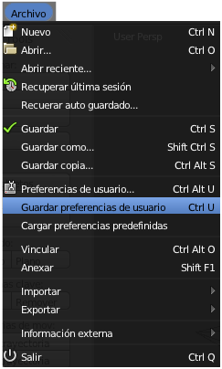
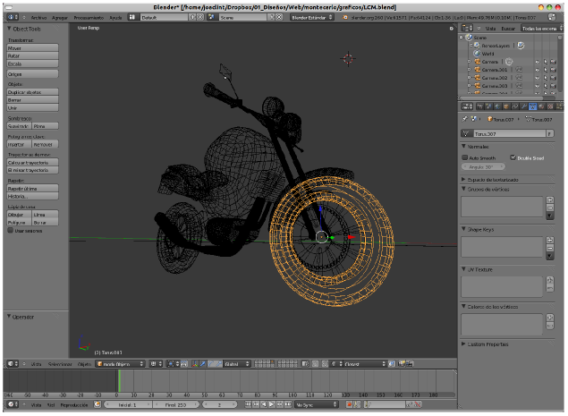

Guardar la configuración
¿Qué pasaría si cerráramos Blender y volviéramos a abrirlo? Todo nuestro cambio de idioma se iría al traste. ¿Por qué? Porque hemos hecho una edición dentro de un documento pero en ningún caso hemos especificado que ese cambio fuera relativo a la configuración general del programa.
La forma de poner solución a esto es decirle ahora a Blender que queremos guardar esos cambios. El camino es Archivo/Guardar preferencias de usuario.
Con esta edición se guarda absolutamente todo, no sólo el cambio de idioma. Es decir que, por ejemplo, si nuestra interfaz se encontrara en este momento de trabajo...
... y guardamos las preferencias, la próxima vez que abramos Blender nos arrancará con diseño incluido; es como decirle a un procesador de textos que cada vez que lo arranquemos aparezca con un determinado texto. Eso solo debe ocurrir cuando el programa se ejecuta a partir de un archivo.